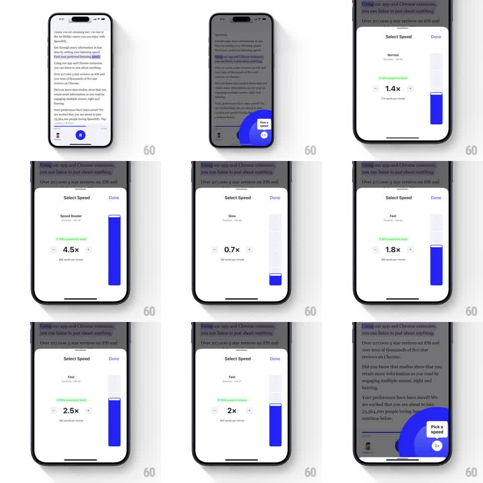

Media
Frame-by-frame

Rebuild this interaction 1:1: Speechify's speed picker - a "Select Speed" bottom sheet with a big vertical blue slider; dragging it scrubs playback speed (0.7x Slow to 4.5x Speed Reader) with the multiplier and words-per-minute updating live.

Rebuild this interaction 1:1: Speechify's speed picker - a "Select Speed" bottom sheet with a big vertical blue slider; dragging it scrubs playback speed (0.7x Slow to 4.5x Speed Reader) with the multiplier and words-per-minute updating live.
## Integration
Integration: stack-agnostic spec - springs given as stiffness/damping, timed motions as duration + curve; map every value to your framework and animation library of choice.
## Scene
Dimmed reader screen with a "Pick a speed" coach bubble; bottom sheet "Select Speed" with Done: a speed label ("Slow", "Normal", "Fast", "Speed Reader"), big multiplier ("1.4x"), "210 words per minute" subtext, a green-highlighted sample line, and a tall vertical blue slider on the right with a thumb.
## Motion spec
Pattern: vertical scrub slider with live value readout.
- Drag the slider thumb: value tracks finger 1:1; the multiplier text updates in real time (0.1x steps), the label flips between Slow/Normal/Fast/Speed Reader at thresholds, and wpm recalculates.
- Slider fill: blue level follows the thumb with a tiny spring lag (~500/30) for fluidity; the label/multiplier subtly scale (1 -> 1.06) while scrubbing.
- Crossing a named threshold fires a light haptic tick.
- Release: thumb eases to the exact 0.1x step (spring ~350/26, ~200ms); audio preview plays a beat at the new speed.
- Done: sheet slides down (~250ms); the reader's coach bubble updates to the chosen speed ("2x").
## Calibration
- The value readout is the focus - it must never lag behind the thumb visually.
- Named zones (Slow/Normal/Fast/Speed Reader) are ranges, not detents; the slider is continuous within them.
## Reduced motion
Slider and text update without spring lag or scale.
## Don't miss
- The slider is VERTICAL (up = faster) and oversized - it's the whole right side of the sheet.
- wpm text changes with the multiplier - "210 words per minute" at 1.4x.